تأسيس السباكة
تمديد شبكات المياه الباردة والساخنة وخطوط الصرف في الفلل والمباني الجديدة باستخدام مواسير وخامات مناسبة، مع اختبار الضغط قبل إغلاق الجدران.
اطلب الخدمةنقدم خدمات السباكة والكهرباء في جدة بأيدي فنيين متخصصين، من تأسيس الشبكات في المباني الجديدة إلى التشطيب والصيانة وكشف التسربات وإصلاح الأعطال الكهربائية. نغطي جميع أحياء جدة وفي مقدمتها أبحر والشاطئ والمرجان والحمدانية والبساتين، ونحرص على جودة التنفيذ ونظافة العمل ودقة المواعيد.


الإخلاص للسباكة والكهرباء مؤسسة متخصصة في تقديم خدمات السباكة والكهرباء المتكاملة في مدينة جدة. نعمل مع أصحاب الفلل والشقق والمباني التجارية والمقاولين، ونتولى العمل من مرحلة التأسيس وتمديد الشبكات داخل الجدران والأرضيات، وحتى مرحلة التشطيب وتركيب الأدوات الصحية والمفاتيح والمقابس والإنارة.
نؤمن أن جودة السباكة والكهرباء تبدأ من التأسيس السليم، لذلك نحرص على اختيار الخامات المناسبة وتنفيذ التمديدات وفق الأصول الفنية، وفحصها واختبارها قبل إغلاق الجدران. كما نوفر خدمات الصيانة وكشف التسربات وإصلاح الأعطال الكهربائية للمنازل القائمة، بسرعة وبأقل قدر من الإزعاج وبنظافة في مكان العمل.
مجموعة متكاملة من خدمات السباكة والكهرباء للمنازل والفلل والمباني التجارية، من التأسيس إلى الصيانة.
تمديد شبكات المياه الباردة والساخنة وخطوط الصرف في الفلل والمباني الجديدة باستخدام مواسير وخامات مناسبة، مع اختبار الضغط قبل إغلاق الجدران.
اطلب الخدمةتركيب المراحيض والمغاسل والخلاطات والدشات وأحواض المطابخ بدقة وإحكام، لضمان منظر أنيق وعدم وجود تسربات.
اطلب الخدمةتحديد مصدر تسرب المياه في الجدران والأسقف والأرضيات ومعالجته بأقل قدر من الكسر، لحماية المبنى من الرطوبة وارتفاع فواتير المياه.
اطلب الخدمةمعالجة انسداد المصارف والمجاري في المطابخ والحمامات وخطوط الصرف الرئيسية، مع تنظيف ومعالجة سبب الانسداد لتجنب تكراره.
اطلب الخدمةتركيب وصيانة سخانات المياه وخزانات المياه ومضخات رفع الضغط بما يضمن مياه ساخنة وضغطًا مناسبًا داخل المنزل.
اطلب الخدمةتمديد مواسير وأسلاك الكهرباء وتحديد أماكن علب التوزيع والمفاتيح والمخارج في المباني الجديدة وفق المخطط وأصول التنفيذ.
اطلب الخدمةتركيب لوحات التوزيع وتوسعتها وتحديثها وتركيب القواطع المناسبة لتوزيع الأحمال بأمان وحماية الأجهزة.
اطلب الخدمةتركيب الإضاءة الداخلية والخارجية والسبوتات والثريات وشرائط الإضاءة بتنسيق يناسب ديكور المكان.
اطلب الخدمةتشخيص وإصلاح انقطاع التيار وفصل القاطع المتكرر وسخونة المقابس وأعطال الأسلاك، بسرعة وبطريقة آمنة.
اطلب الخدمةتمديد خطوط الكهرباء الخاصة بالمكيفات والأفران والسخانات والأجهزة الكبيرة بأحمال مناسبة وقواطع مستقلة.
اطلب الخدمةنقدم خدماتنا في المرحلتين معًا أو كلٌّ على حدة، لأن جودة ما تراه بعينك تعتمد على ما يوجد خلف الجدران.
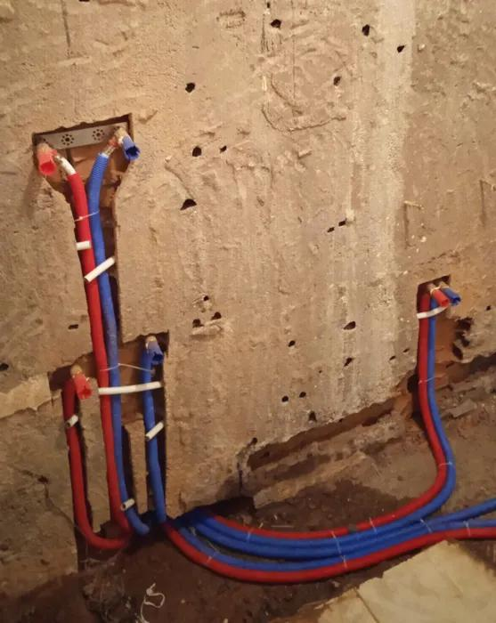
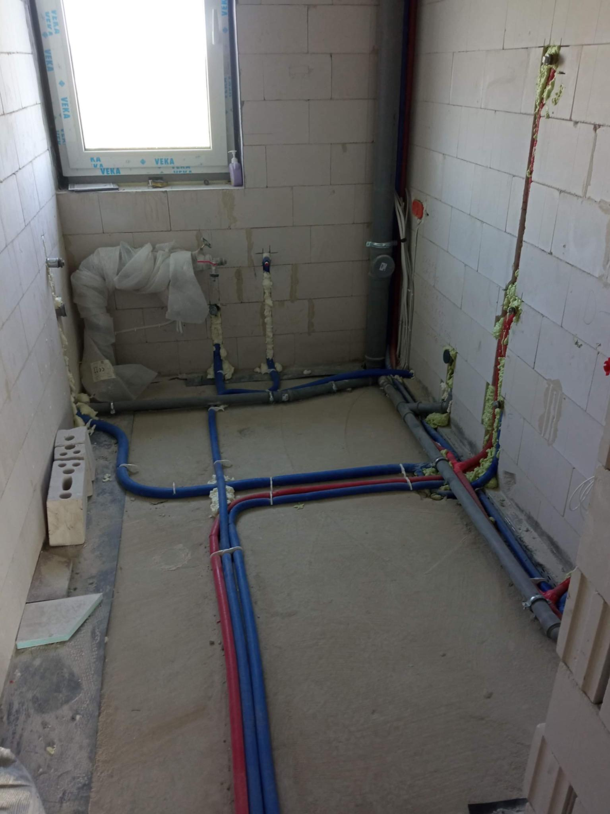
هي المرحلة التي تُمدَّد فيها الشبكات قبل البياض والسيراميك. أي خطأ فيها يصعب إصلاحه لاحقًا، لذلك ننفذها بعناية ونفحصها قبل الإغلاق.
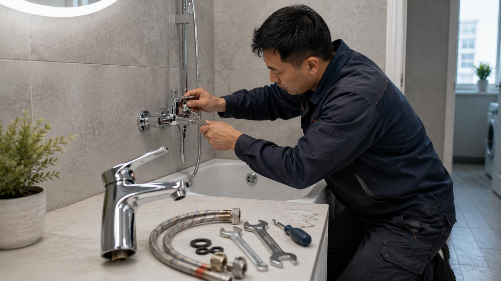
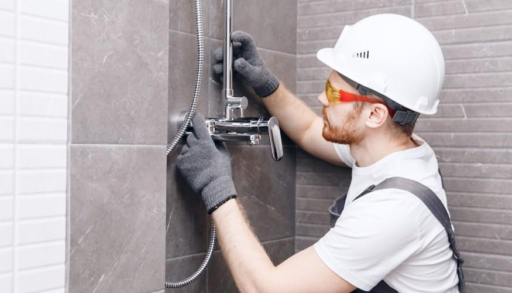
بعد اكتمال الجدران والأرضيات نركّب الأدوات الصحية والمفاتيح والمقابس والإنارة، ونجرب كل نقطة للتأكد من عملها بشكل سليم.
أي خطأ في التأسيس يصعب إصلاحه بعد البياض والسيراميك، ويكلف كسرًا وإعادة تشطيب. لذلك ننصح دائمًا بتنفيذ التأسيس بعناية وفحصه قبل إغلاق الجدران.
لمحة عن أنواع الأعمال التي نقدمها: تأسيس وتشطيب وصيانة للسباكة والكهرباء.

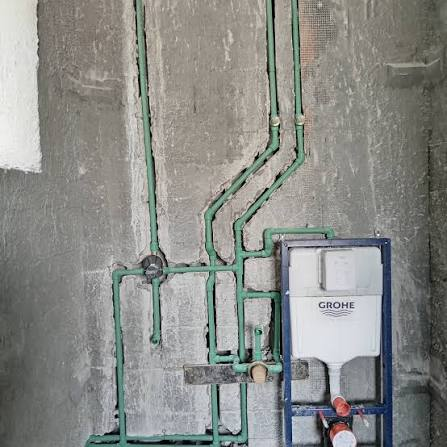
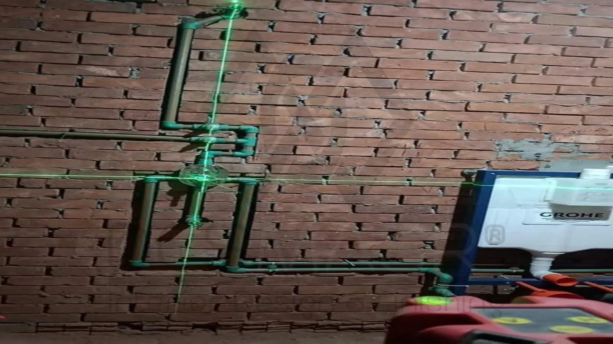

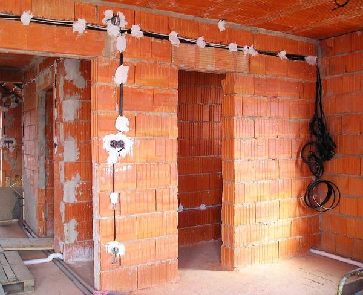


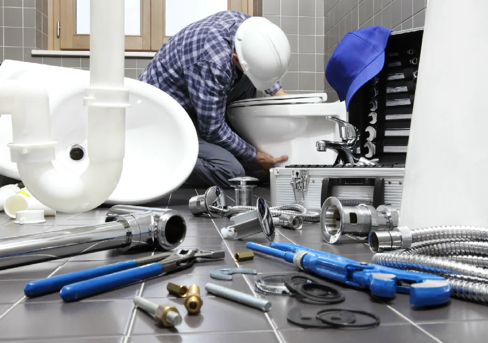

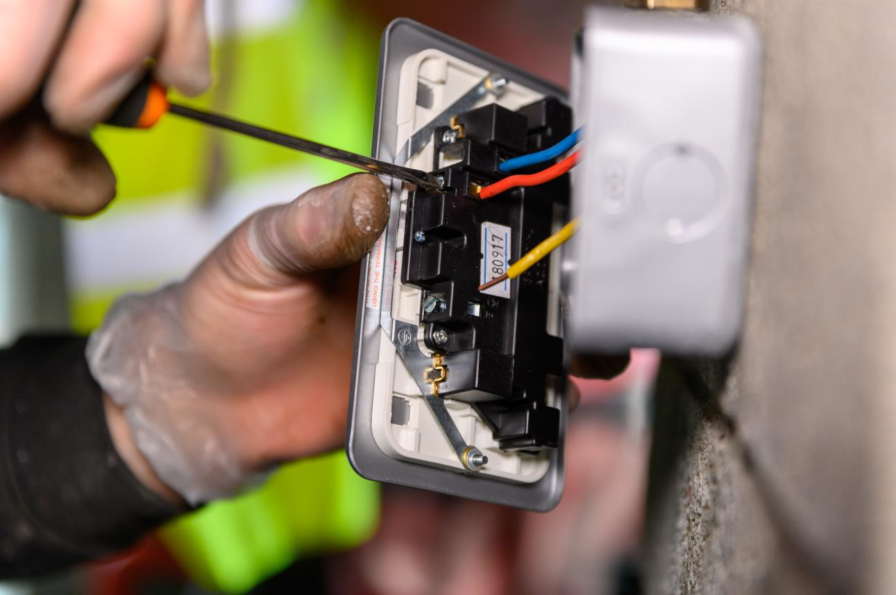

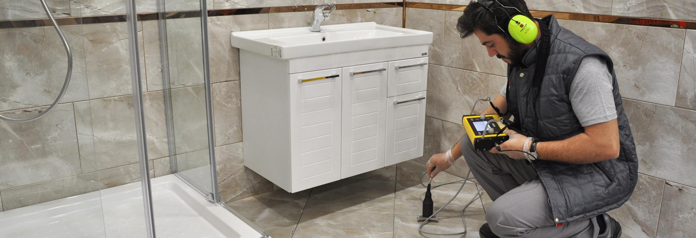

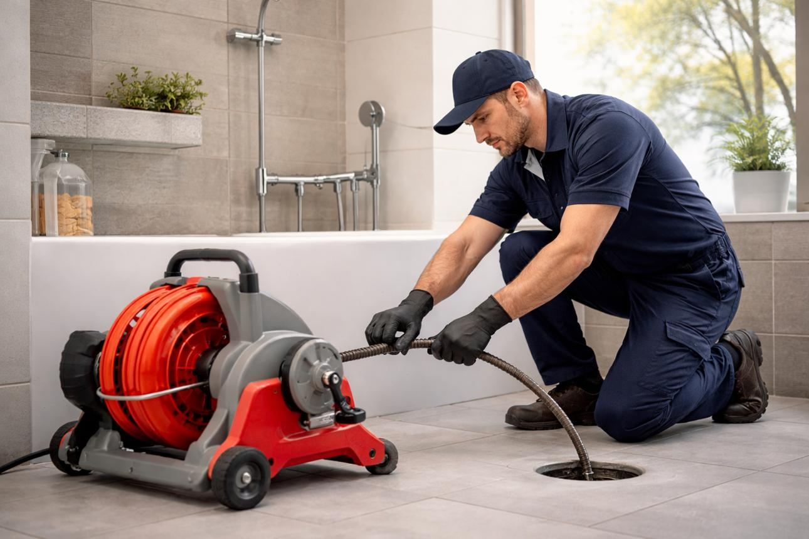
الصور المعروضة توضيحية لأنواع الأعمال التي نقدمها.
آلية واضحة تبدأ بمكالمة وتنتهي بتسليم عمل مفحوص ومجرَّب.
تواصل معنا هاتفيًا أو عبر واتساب واشرح لنا المطلوب.
نحدد موعد الزيارة ونعاين الموقع ونحدد نطاق العمل.
نتفق معك على تفاصيل التنفيذ والموعد قبل البدء.
ننفذ العمل بخامات مناسبة مع الحفاظ على نظافة المكان.
نختبر جميع النقاط ونسلّمك العمل بعد التأكد من سلامته.
فريق يجمع بين السباكة والكهرباء ويعرف تفاصيل المباني في جدة.
نصل إلى أبحر والشاطئ والمرجان والحمدانية والبساتين وبقية الأحياء.
خدمة متكاملة من أول تمديد إلى آخر مفتاح كهرباء.
نحافظ على نظافة مكان العمل ونترك الموقع مرتبًا بعد الانتهاء.
نشرح لك المطلوب ونتفق على التفاصيل قبل البدء دون مفاجآت.
اتصال وواتساب على رقم واحد لطلب الخدمة أو الاستفسار.
معلومات مفيدة تساعدك على اكتشاف المشكلات مبكرًا والحفاظ على سلامة منزلك.
من العلامات الشائعة ارتفاع مفاجئ في فاتورة المياه، أو ظهور رطوبة وبقع على الجدران والأسقف، أو تقشر الدهان، أو انخفاض ضغط المياه، أو سماع صوت جريان مياه عند إغلاق جميع الصنابير. عند ظهور هذه العلامات يفضل الاتصال بفني لكشف التسرب مبكرًا قبل أن يتسع الضرر.
إذا لاحظت رائحة احتراق، أو سخونة في المقابس والمفاتيح، أو تكرار فصل القاطع، أو وميضًا في الإضاءة، أو صعقات خفيفة عند لمس الأجهزة، فهذه علامات على خلل يحتاج إلى معاينة عاجلة. لا تحاول إصلاح الأسلاك بنفسك، واقطع التيار عن الدائرة المتأثرة حتى وصول الفني.
شبكة المياه والصرف تُدفن داخل الجدران والأرضيات، وأي خطأ في الميول أو الوصلات أو الأقطار قد يسبب تسربات وانسدادات متكررة. لذلك يجب اختيار مواسير مناسبة، وتثبيتها جيدًا، وإجراء اختبار ضغط للتأكد من سلامتها قبل التبليط والبياض.
توزيع الأحمال على قواطع مستقلة للمكيفات والأفران والسخانات يقلل من احتمال ارتفاع الحرارة وفصل القواطع. كما يساعد التأريض الصحيح وقواطع الحماية على تقليل مخاطر الصعق وحماية الأجهزة الكهربائية، ويجب أن تُنفذ هذه الأعمال بواسطة كهربائي مختص.
تجنب رمي المناديل والمخلفات الصلبة في المراحيض، ولا تصب الزيوت والدهون في مصارف المطبخ، واستخدم مصافي في أحواض المطبخ والاستحمام لمنع تراكم الشعر وبقايا الطعام. الصيانة الدورية للمصارف تقلل من الانسدادات والروائح.
يعتمد اختيار سعة السخان والخزان على عدد أفراد الأسرة وعدد الحمامات واستهلاك المياه اليومي. ننصح بتركيبهما بواسطة فني، مع التأكد من صلاحية الوصلات والصمامات والتوصيلات الكهربائية، وإجراء صيانة دورية للحفاظ على كفاءتهما.
نصلك أينما كنت في جدة. هذه أبرز الأحياء التي نخدمها، وإن لم يكن حيّك مذكورًا فتواصل معنا وسنرتب الزيارة.
نخدم أبحر الشمالية والجنوبية، من الفلل والمنتجعات إلى الشقق السكنية، بخدمات التأسيس والتشطيب والصيانة.
02سباك وكهربائي في حي الشاطئ للفلل والشقق والعمائر، مع سرعة الوصول وإتقان العمل.
03خدمات تأسيس وصيانة السباكة والكهرباء في حي المرجان لمختلف أنواع المباني.
04نغطي حي الحمدانية بخدمات كشف التسربات وتركيب الأدوات الصحية وإصلاح الأعطال الكهربائية.
05فني سباكة وكهرباء في البساتين للمنازل والفلل والمشاريع تحت الإنشاء.
06خدمات السباكة والكهرباء في حي النعيم من التأسيس حتى التسليم.
07سباكة وكهرباء في حي النزهة: صيانة وتركيب وكشف أعطال.
08نخدم حي الروضة بتأسيس وتشطيب وصيانة أعمال السباكة والكهرباء.
09سباك وكهربائي في حي الزهراء لمختلف الاحتياجات المنزلية والتجارية.
10خدمات متكاملة في حي الأندلس تشمل تسليك المجاري وتركيب السخانات ولوحات الكهرباء.
11سباكة وكهرباء في حي الخالدية للشقق والفلل والمحلات.
12نصل إلى حي الرحيلي لتنفيذ أعمال التأسيس والصيانة بجودة عالية.
13خدمات السباكة والكهرباء في حي الريان للمنازل والمباني.
14نتواصل معكم لخدمة طريق جدة – مكة ومكة المكرمة حسب الموقع والموعد.
نعم، نغطي جميع أحياء جدة وفي مقدمتها أبحر والشاطئ والمرجان والحمدانية والبساتين، إضافة إلى النعيم والنزهة والروضة والزهراء والأندلس والخالدية والرحيلي والريان.
نعم، نقدم تأسيس شبكات المياه والصرف وتمديدات الكهرباء للفلل والشقق والمباني الجديدة، مع فحص التمديدات واختبارها قبل إغلاق الجدران.
نعم، نحدد مصدر تسرب المياه في الجدران والأسقف والأرضيات ونعالجه بأقل قدر ممكن من الكسر.
نعم، نجمع بين خدمات السباكة والكهرباء في مكان واحد، ويمكن تنسيق الزيارة لتنفيذ الأعمال معًا.
اتصل بنا على 0560773308 أو راسلنا عبر واتساب، وسنحدد معك موعد المعاينة.
إلى جانب أحياء جدة يمكننا خدمتكم على طريق جدة – مكة وفي مكة المكرمة، تواصلوا معنا لتنسيق الموقع والموعد.
اتصل الآن وحدد موعد المعاينة. سباكة وكهرباء، تأسيس وتشطيب وصيانة، في جميع أحياء جدة.
0560773308